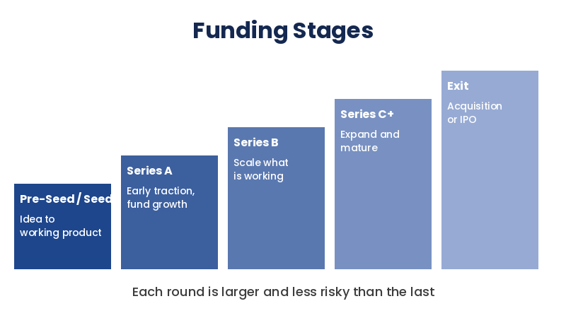
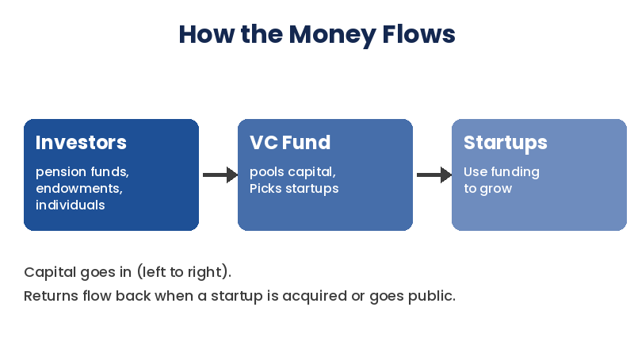
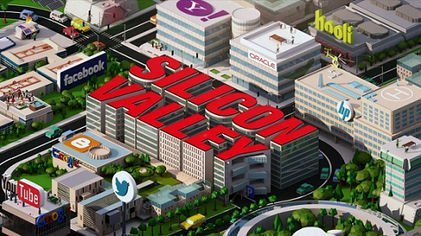

What Is Venture Capital?
Every major tech company you use today — the app you order food from, the tool you use for group projects, the platform you scroll during study breaks — started the same way: as a risky bet that someone was willing to fund before anyone else believed in it. That’s venture capital. VC firms raise money from institutional investors (pension funds, university endowments, wealthy individuals) and place it into early-stage startups in exchange for equity, betting that a handful of those companies will grow big enough to make up for the many that won’t.
This isn’t like a bank loan. A startup that takes venture money isn’t expected to pay it back in monthly installments — the investor is betting on the company’s equity becoming worth far more later, usually when the company gets acquired or goes public. That structure is what makes venture capital such a high-risk, high-reward game, for founders and investors alike.
How the Industry Is Structured

Venture funding usually happens in stages, each one riskier and smaller than the last, and each one meant to fund the company until it hits its next major milestone. A pre-seed or seed round might fund a founder turning an idea into a working product. A Series A is usually raised once a company has some early traction and needs money to grow it. Later rounds — Series B, C, and beyond — fund companies that are scaling a business model that’s already working. Very few companies raise all the way through; most either get acquired, shut down, or reach profitability and stop needing outside funding.
- Pre-Seed and Seed: funds a founder turning an idea into a working product.
- Series A: raised once a company has some early traction and needs money to grow it.
- Series B, C, and beyond: funds companies that are scaling a business model that’s already working.
- The exit: most companies get acquired, shut down, or reach profitability and stop needing outside funding.
How Money Moves


Investors put money into a VC fund, and the fund invests it in startups. When a startup is acquired or goes public, the returns flow back to the fund and then to its investors.
Why This Site Exists
Most explanations of venture capital either stay abstract (“investors fund risky companies”) or jump straight to jargon (SAFEs, cap tables, liquidation preferences) without ever explaining how an investor actually decides yes or no. This site is meant to sit in between: a clear explanation of how VC works, the real framework investors use to evaluate a startup, and concrete, real-world examples of that framework playing out — both when it worked and when it spectacularly didn’t.
Keep exploring: read How Investors Decide or jump straight to the Real-World Cases.